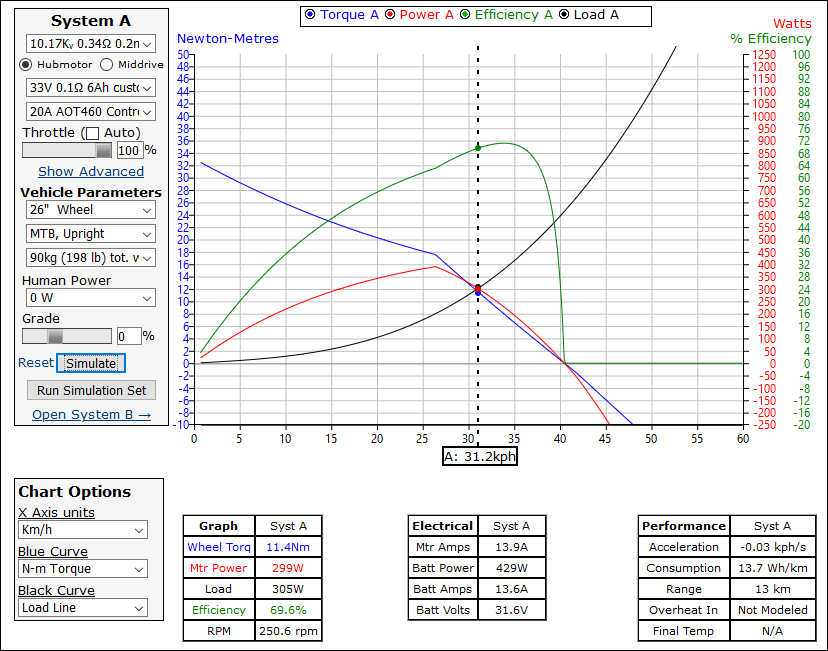

{kind=link}
{kind=link}
{kind=link}

I attempted to convert my unused mountain bike into an electric bicycle. I tried multiple methods starting with the easiest and cheapest friction drive. After learning more about how an electric motor works I replaced it with a geared motor that drives the wheel through a chain. After being dissatisfied with the performance, I replaced it with a the motor, that is built into the wheel hub.
A friction drive was my first attempt. This type of drive works by having the motor rotate a small rubber roller wheel which is held onto the outer surface of the bicycle wheel. Due to friction, the roller will transfer power to the bicycle wheel. This works, but there are many shortcomings to this design. If there is any mud or even a small amount of water on the wheel, the drive will slip, and will be useless until the wheel has dried. Even if the wheel is dry, the drive must not be overpowered, or else the friction breaks, and the roller and the wheel will rotate will different speeds, this will grind off material from the roller and the wheel surface. The bicycle wheel is not perfectly circular, so the motor has to follow the surface, I did not account for this.
I used the MY1025 electric motor, which can be purchased for an extremely low price. This is a very simple DC motor, rated for 2750 RPM at 24 V input voltage. This is the achieved rotation speed if the output is 250 W and the input is about 320 W. At this point, the motor should generate about 70 W waste heat, which it will dissipate through its casing. Above the rated load, the motor will overheat over time. I didn't find a datasheet for this motor, but its parameters can be measured or calculated. For an electric bicycle the final speed will depend on the rider mass, wind, road inclination, motor rotation speed, battery voltage, and many other things. This is a very complicated calculation, and it is better to use a simulator.
The friction drive is completely quiet, but you can feel it pushing the the bicycle. This is probably its only advantage.
The weather is often rainy here, so it made no sense to use the friction drive. To solve the slip problem, I switched to a chain drive. The electric motor is basically the same model, but with an added gear reduction. The reduction means that the fast rotation of the motor is slowed down significantly, but the torque is increased by the same amount. There is a datasheet available. The output gear is connected to the wheel's gear through a chain, this also increases the reduction. My bike's final reduction ratio was 1:17. Now I had enough torque, that the bicycle could climb about 5% grade hills without any pedal help. This reduction ratio also resulted in a slow top speed (about 20-22 km/h), which I solved by increasing the input voltage to 33 V. The bicycle had a top speed of 30-33 km/h (depending on the battery voltage). The motor is mounted on the side of the frame and unless the the wheel axle is designed for it, this means that the original chain has to be removed. Because no pedal input is possible anymore, the range becomes very limited.
The problem with this design was that because of the chain and the internal reduction gear generated a very loud noise. The increased voltage also made the motor louder. While this is somewhat helpful, because of the feedback of what the motor is doing, it could also be very annoying for other people. While rated for 250 W output, this motor was used at up to 500 W output because of the high voltage, and after some hill climbing, it could overheat in a few minutes. The problem with this motor is that copper coils, which generate the heat are part of the rotor, and because the case is closed, it can't dissipate the heat quickly enough, so I had to wait until it cooled enough to continue using the bicycle.
Simulation for 22 V input voltage. The motor feels too weak.
Simulation for 33 V input voltage. The increased voltage improved torque, top speed and efficiency.

Then I knew, that 250 W was simply not enough (it's the EU limit), and looked for a motor capable of higher output power. For cost reasons, I chose a 500 W direct drive hub motor kit. This solved the overheating problem and it was also very quiet. The current problems are the high weight and the motor drag.